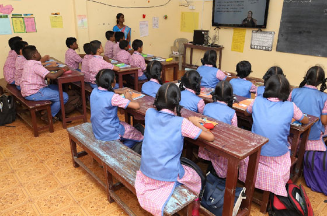
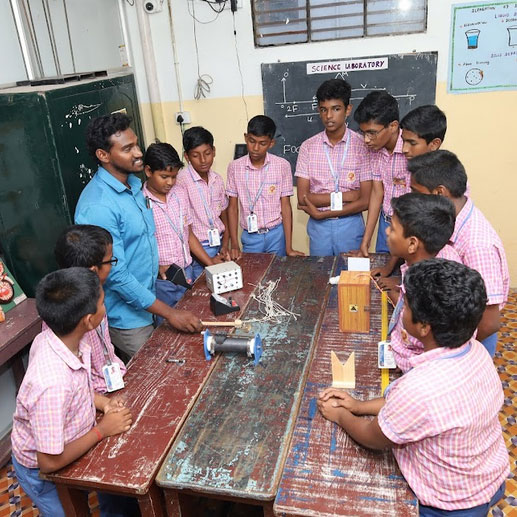

Home - Who are We
“Times Change; Values Don’t”
SBV School, raised on the lofty ideals of the Founder Trustee Mr. C. Krishnan & Mrs. K. Booma Krishnan, is widely acknowledged as one of the leading institutions among the schools in Mannargudi located in the heart of the city. We offer children an outward-looking, forward-thinking education that prepares them for life.
The immense foresight of this great visionary has been the guiding force of the school, which lays emphasis on timeless values that have been incorporated into the ethics of the school from its inception in 1996 and remain unchanged.
The various curricular and co-curricular activities focus on academic excellence, ethical and spiritual development and personal growth that leads to international understanding – the need of the hour.


We created a school based on our own observations of how learning thrives. We learnt from expert knowledge but still critically question it. We built a community based on mutual respect and a culture of striving.
We saw order and beauty emerge from this, not laid down by lines or laws. We dared to be different only to be a better school, and to call ourselves SBVians.
Our inclusive approach develops diverse interests, helping children discover their potential and use their talents to better engage with the world around them.
It inspires and equips them to be lifelong learners who are responsible and compassionate global citizens committed to equal rights and opportunities for all.
Our aim is to make learning not a chore, value the uniqueness of every child, and prepare them to excel as thoughtful global citizens.